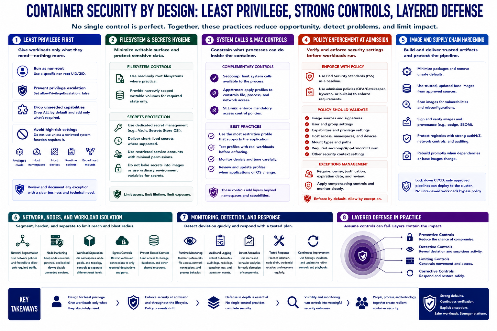

Defensive Controls and Design Patterns
Connecting to LMS... Progress: in progress

Narration
Least privilege is the central design pattern. Run containers as a non-root user, prevent privilege escalation, and drop capabilities that the application does not require. Avoid privileged mode, host namespaces, host devices, runtime sockets, and broad host mounts unless a reviewed system function truly needs them.
Use read-only root filesystems where practical and provide narrowly scoped writable volumes for required state. Protect secrets through dedicated management, short-lived delivery where supported, restricted service accounts, and avoidance of secrets baked into images or ordinary environment artifacts.
Seccomp limits system calls available to a process. AppArmor and SELinux can constrain file, process, and resource access through mandatory policy. These controls complement namespaces and capabilities; profiles should be tested against real application behavior and maintained through updates.
Apply Pod Security Standards and admission policies to enforce expected settings before deployment. Policy should verify image sources, user settings, capabilities, mounts, host access, and required profiles. Manage exceptions with owners, expiration, and compensating controls.
Harden images by minimizing packages, removing unsafe defaults, using trusted base images, scanning and signing artifacts, protecting registries, and rebuilding promptly when dependencies change. CI/CD permissions should not allow unreviewed workloads to bypass cluster policy.
Network segmentation, node hardening, workload separation, runtime monitoring, and tested response complete the layered design. No individual control guarantees containment. The system is strongest when preventive controls reduce opportunity, detective controls reveal deviation, and architecture limits impact.